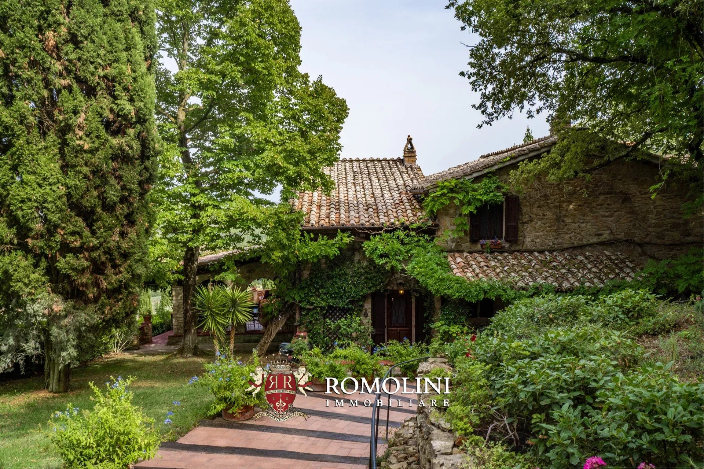

€1.150.000
Magione, Umbria, Italy
Open the listingPanoramic Magione farmhouse above Lake Trasimeno with a built 8×4 private pool, about 4.9 ha of olives plus woodland across 10.6 ha — classic Umbrian farmhouse character that punches above at €1.15M.
Opened 12 Sep 2026 on Romolini page; Asking price €1,150,000; interiors listed 382 m² / 3 bed / 3 bath (main farmhouse also described as 324 m² currently laid out as 2 bedrooms, expandable to four); Pool: Yes; excellent condition; bocce court below pool needs light work only.